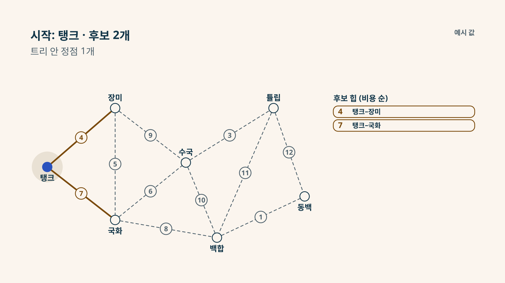

정원 물탱크 예제로 후보를 예측하고 실제 실행을 확인하세요.
힙에서 꺼낼 후보를 고르고, 두 끝이 이미 트리 안인지 생각해 보세요. 같은 비용이면 먼저 넣은 후보가 먼저 나옵니다.

입력 간선 (비용)
트리 안:
꺼내기 전 후보 (넣은 순서)
원본 그래프, 실행 결과, Python/C++ 코드와 그림은 학습 소스 ZIP에 있습니다. 정원 입력 · 실행 추적 · 그림 목록